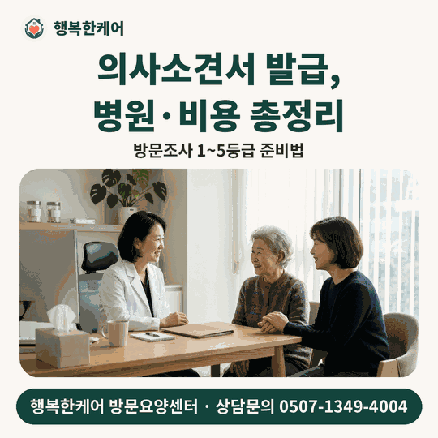

1. 장기요양 의사소견서, 언제 발급받아야 국비 지원이 될까요?
가장 중요한 핵심은 '장기요양인정 신청서를 국민건강보험공단에 먼저 접수한 뒤, 공단 직원이 방문조사를 마치고 의사소견서 제출 안내 문자를 보냈을 때' 병원에 가셔야 한다는 점입니다. 공단에서 발급 요청 안내(발급의뢰서)가 나오기 전에 임의로 먼저 병원에서 소견서를 발급받으시면 전액 비급여(약 4~5만 원)를 본인이 부담하게 됩니다. 반면 공단 안내 문자를 받은 뒤 지정 의료기관에서 발급받으시면 국가에서 80%~100%를 지원하여 일반 대상자는 약 1만 원 안팎의 본인부담금만 내시면 됩니다.

2. 일반 진료과 vs 치매(5등급·인지지원등급) 발급 병원 차이
어르신의 주된 불편 증상이 무릎·허리 관절 질환이나 뇌경색·파킨슨병·노환 등 신체 거동 불편이시라면 평소 다니시던 내과, 정형외과, 재활의학과, 신경과, 한의원(한의사 발급 가능)에서 의사소견서를 발급받으실 수 있습니다. 반면 기억력 저하, 길 찾기 어려움, 성격 변화 등 초기 치매 증상으로 장기요양 5등급이나 인지지원등급을 신청하시는 경우에는 보건복지부 보수교육을 이수한 의료기관(신경과·정신건강의학과 등)에서 치매 진단을 포함한 의사소견서와 최근 1년 이내 치매약 처방전(또는 진료기록지)을 함께 준비하셔야 공단 등급판정위원회 심사가 원활하게 진행됩니다.
3. 공단 직원 가정 방문조사 날 보호자 필수 체크리스트
국민건강보험공단 소속 조사 직원이 어르신 댁이나 병원으로 방문하여 신체기능(옷 입기, 세수하기, 양치질, 식사, 체위 변경, 일어나 앉기, 화장실 이동 등 12개 항목), 인지기능, 행동변화, 간호처치, 재활 영역 등 총 52개 항목을 조사합니다. 어르신들은 낯선 공단 직원이 오시면 평소에는 혼자 못 일어나시면서도 '나는 다 혼자 잘한다'고 말씀하셔서 실제 상태보다 등급이 낮게 나오거나 등급외 판정을 받는 경우가 많습니다. 따라서 방문조사 날에는 자녀분이나 행복한케어 사회복지사가 함께 자리하여 최근 1개월간 식사 거름, 약 복용 누락, 야간 화장실 이동 시 비틀거림, 최근 낙상 위험 등 실제 일상생활 어려움을 구체적으로 설명해 드리는 것이 매우 중요합니다.
4. 2026년 장기요양 1~5등급 판정 후 월 한도액과 본인부담금(15%)
인정신청 후 약 3~4주 뒤 장기요양 1~5등급 판정이 나오면 어르신 댁으로 장기요양인정서와 개인별장기요양이용계획서가 우편 발송됩니다. 2026년 공단 고시 수가 기준 일반 수급자(본인부담 15%)가 가장 많이 이용하시는 하루 3시간(180분) 방문요양 1회 본인부담금은 약 8,553원이며, 병원 동행이나 집중 돌봄을 위한 하루 4시간(240분) 이용 시 1회 약 10,512원입니다. 건강보험료 감경 대상자(본인부담 9% 또는 6%)와 기초생활수급권자(법정 본인부담금 0%) 어르신은 법정 경감 혜택이 그대로 적용됩니다.
5. 방문요양·2인 1조 방문목욕·복지용구(연 160만 원) 맞춤 설계
등급을 받으신 뒤에는 월 한도액 안에서 주 5회 전담 요양보호사의 1:1 가정 방문요양(식사 조리, 복약 확인, 개인위생, 실내외 산책, 병원 동행, 인지자극 활동)과 주 1회 2인 1조 전문 요양보호사가 찾아가는 가정 방문목욕(일반 15% 기준 1회 약 7,510원)을 함께 조합해 이용하실 수 있습니다. 또한 연 160만 원 한도의 복지용구(안전손잡이, 미끄럼방지매트, 성인용보행기, 전동침대, 목욕의자 등)도 어르신 댁 환경에 맞춰 한 번에 안내해 드립니다.
6. 첫날 사회복지사 현장 동행과 일일 모바일 안부 공유
행복한케어는 등급 신청 대행만 해드리고 끝나는 것이 아니라, 어르신 성향과 식습관에 꼭 맞는 대전 유성구·서구·중구·대덕구·동구 근거리 베테랑 요양보호사를 1:1로 배정하고 돌봄 첫날 담당 사회복지사가 반드시 현장에 함께 동행합니다. 매일 당일 식사량과 복약 여부, 컨디션 변화를 직장인 자녀분 스마트폰으로 공유해 드려 멀리 계셔도 안심하실 수 있습니다.
7. 대전 5개 구 전 지역 평일 저녁·주말 무료 출장 방문상담
아직 등급 신청 전이시거나 의사소견서 발급 병원을 찾고 계신다면 대표전화(0507-1349-4004)로 편하게 연락 주세요. 유성구(봉명동·도안동·상대동·노은동·지족동·반석동·관평동), 서구(둔산동·탄방동·갈마동·월평동·관저동·도마동), 중구(태평동·문화동·유천동), 대덕구(송촌동·법동·신탄진), 동구(가오동·용운동) 어디든 사회복지사가 무료로 찾아뵙고 신청서 접수부터 방문조사 준비까지 친절히 도와드립니다.
2026·2027년 노인장기요양보험 등급별 월 한도액 · 방문요양·방문목욕 본인부담금 기준표
보건복지부 고시(2026 확정) 및 제5차 장기요양위원회 의결(2027 예상) 기준, 장기요양 1~5등급 어르신이 대전 자택에서 재가급여(방문요양·가족요양·방문목욕)를 이용하실 때 국비 85~100%가 지원됩니다. 일반 수급자(15%), 감경 대상자(9%·6%), 기초생활수급권자(법정 0%) 기준 상세 내역은 아래와 같습니다.
| 구분 (급여 시간 / 등급) | 2026년 고시 (15%) | 2027년 예상 (15%) | 2027 감경 (9% / 6%) |
|---|---|---|---|
| 방문요양 1회 3시간 (180분) | 57,020원 (8,553원) | 59,190원 (8,879원) | 5,327원 / 3,551원 |
| 방문요양 1회 4시간 (240분) | 70,080원 (10,512원) | 72,740원 (10,911원) | 6,547원 / 4,364원 |
| 가정 방문목욕 1회 (2인 1조) | 50,100원 (7,515원) | 51,870원 (7,781원) | 4,668원 / 3,112원 |
| 가족요양 60분(월20일) / 90분(월31일) | 25,320원 / 34,120원 | 26,280원 (3,942원) / 35,420원 (5,313원) | 주 1회 가정 방문목욕 병행 가능 |
※ 월 재가급여 한도액(2026→2027 예상): 1등급 2,512,900원→2,891,400원(+15.1%) · 2등급 2,331,200원→2,682,300원(+15.1%) · 3등급 1,528,200원→1,586,300원 · 4등급 1,409,700원→1,462,000원 · 5등급 1,208,900원→1,254,900원. ※ 2027년 수치는 장기요양위원회 의결 예상수가이며 관보 최종 고시 및 공단(1577-1000) 공지로 확정됩니다. 무료 방문상담: 행복한케어(0507-1349-4004)